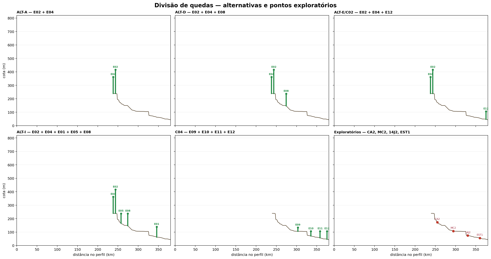
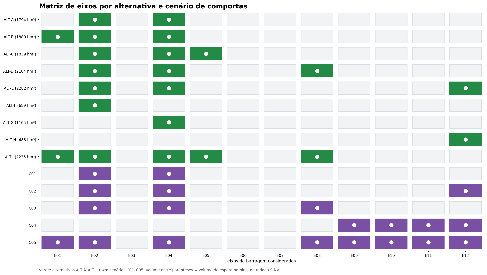
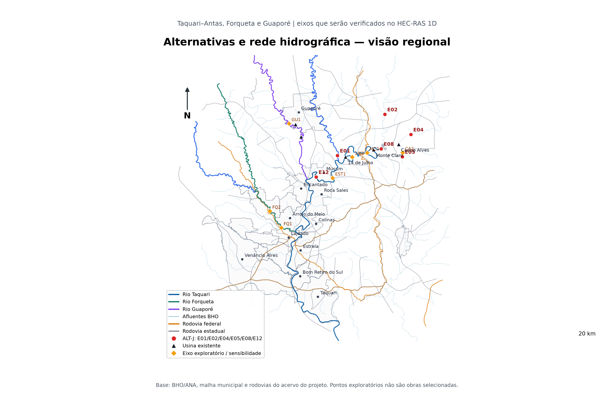
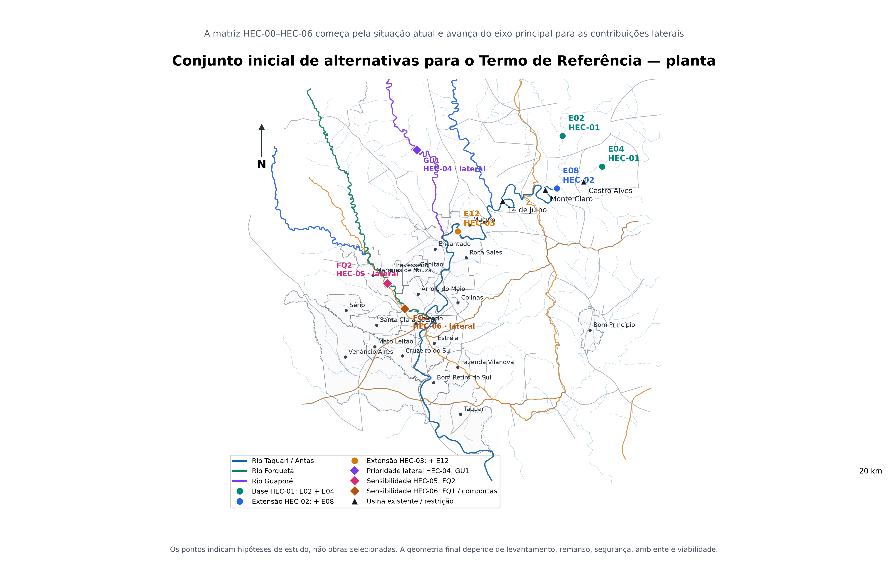
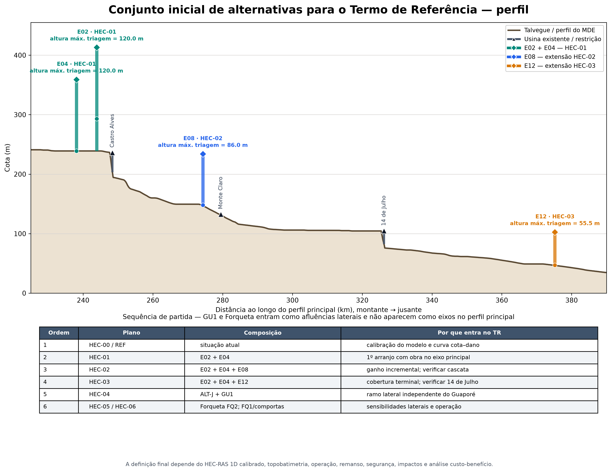
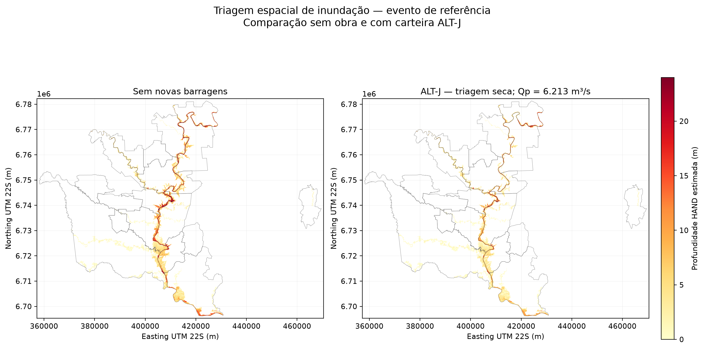
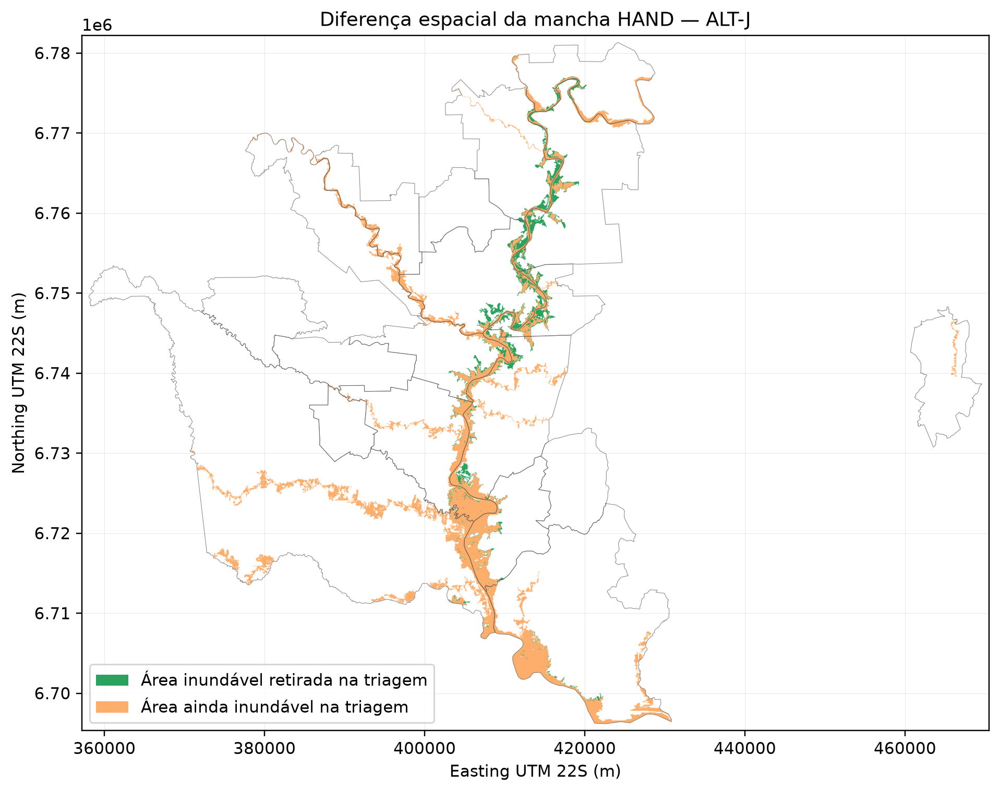
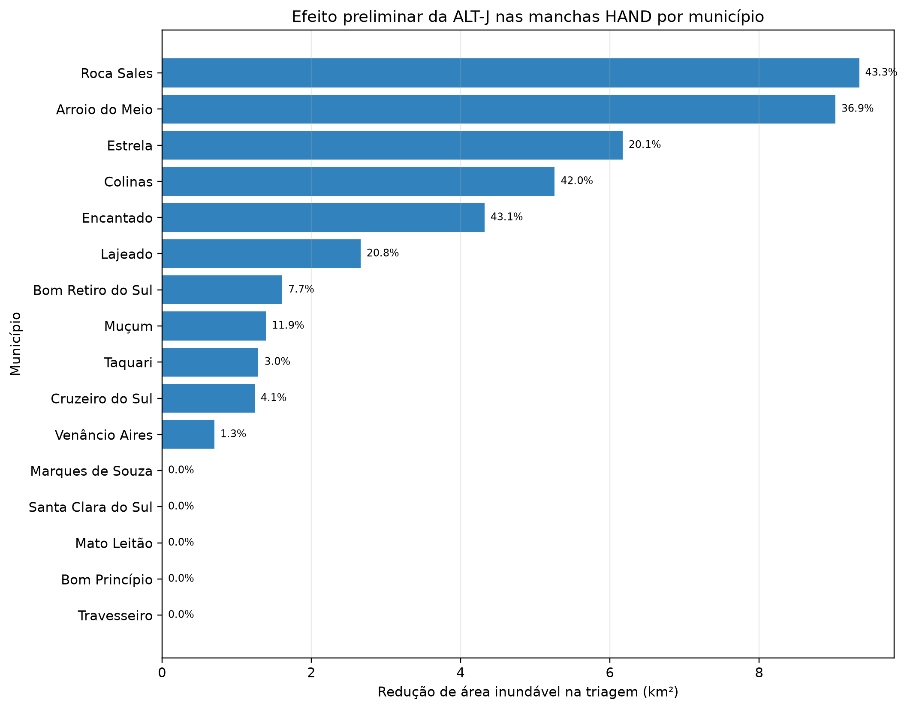
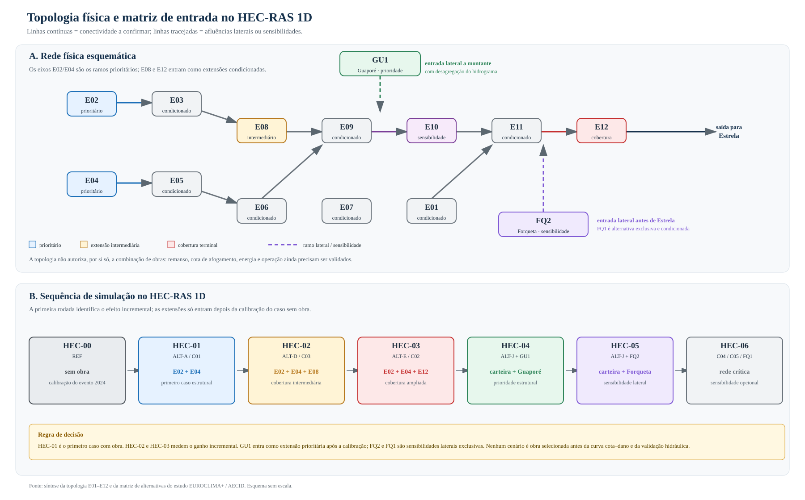

9 Relatório consolidado, leitura imparcial e plano de continuidade
Este capítulo reúne os resultados produzidos até 07/09/2026 e organiza a decisão que a contratante deverá tomar. O estudo ainda é uma triagem técnica preliminar: não há alternativa de barragem selecionada, não houve execução do HEC-RAS e as cifras de dano, custo e energia ainda não são suficientes para uma decisão de investimento.
9.1 Pergunta decisória
O trabalho procura responder, em ordem de grandeza, se reservatórios de montante poderiam reduzir as vazões, níveis, áreas inundáveis e danos no corredor do rio Taquari–Antas com foco em Estrela/RS. A pergunta correta não é apenas “qual barragem armazena mais?”, mas:
- qual parcela da cheia chega ao ponto de controle e em que momento;
- quanto armazenamento é fisicamente utilizável antes do pico;
- qual redução de nível, profundidade, duração e área resulta em cada município;
- quais impactos, custos, perda de energia, remansos e riscos operacionais são criados;
- se uma solução com barragens é melhor do que proteção local, diques, medidas não estruturais ou uma combinação dessas opções.
O objeto desta nota é subsidiar um Termo de Referência. Ela não substitui estudo de viabilidade, projeto básico, avaliação de segurança de barragens, licenciamento ou consulta às comunidades afetadas.
9.2 O que foi analisado
9.2.1 Dados territoriais, relevo e GIS
Foram organizados os eixos do EUROCLIMA-rev.kmz, a rede hidrográfica, áreas de contribuição, municípios, usinas existentes, reservatórios e o trecho detalhado. O fluxo de trabalho usa o MDE do projeto, indicado como derivado do ANADEM, com processamento D8, perfil longitudinal e HAND. As geometrias de inspeção foram reunidas em GeoPackages, Shapefiles e KMZs; o catálogo territorial e de CAVs é a referência para rastrear cada eixo.
O trecho detalhado preliminar preparado para o HEC-RAS tem 39,40 km de eixo, 102 seções, quatro travessias e seis confluências. A auditoria espacial encontrou 19.440 km² no limite de montante, 4.002,3 km² em seis laterais e 23.699 km² no limite de jusante; resta explicar uma diferença de 256,7 km² antes de fechar os contornos hidráulicos. Esse fechamento é uma condição de qualidade, não um ajuste cosmético: somar laterais sem resolver a diferença pode contar a mesma água duas vezes.
9.2.2 Curvas cota–área–volume e volume de espera
As CAVs das usinas existentes foram confrontadas com a base de metadados do SNIRH. Para os novos eixos, a CAV foi aproximada a partir de curvas de nível e da área alagada estimada no MDE, com interpolação e ajuste de curvas. Essa abordagem é aceitável para triagem de alternativas ainda sem reservatório, mas deverá ser substituída ou validada por levantamento topográfico, geologia, batimetria e projeto de engenharia.
É essencial distinguir duas grandezas:
V_req = ∫ max[0, Q_Estrela(t) − Q_alvo] dt: volume ideal requerido na seção de controle para retirar o excesso acima da vazão-alvo;V_espera,i = f_esp × V_max,i(H_i): capacidade nominal de espera do eixoi, obtida da CAV, da altura adotada e da fração de espera.
Na rodada atual, V_req não foi distribuído por uma otimização entre reservatórios. Cada eixo recebeu sua própria altura admissível e fração de espera, e a cota de operação foi obtida invertendo a sua CAV. Logo, não existe uma cota única para toda a alternativa. O roteamento determina posteriormente quanto cada reservatório realmente armazena, quando satura e qual vazão entrega a jusante.
O valor de Q_alvo = 4.000 m³/s é uma referência preliminar na seção de controle em Estrela, não uma vazão a montante de Estrela nem uma vazão legal de “não inundação”. Ele será substituído por uma relação cota–profundidade–dano calibrada no HEC-RAS e por dados observados.
9.2.3 Hidrologia e roteamento
Foram usados postos da ANA/HidroWeb e hidrogramas de triagem para testar a sincronização das contribuições do Antas, Forqueta e Guaporé. A rodada calibrada C1–C4 estimou pico natural de 16.299 m³/s na seção de 19.440 km² e pico residual de 6.213 m³/s para ALT-J na regra de barragem seca. Esses números são úteis para comparar hipóteses, mas não são resultados hidráulicos finais.
O histórico de eventos também mostrou que maio de 2024 e novembro de 2023 não devem ser tratados como se fossem o mesmo evento: um pode ter maior volume, outro maior pico e defasagens diferentes. A frequência estatística e a transposição precisam ser revisadas com a série final, sem chamar automaticamente um evento de “100 anos”.
Foi ainda avaliado o gerador de séries sintéticas Kirsch–Nowak. Ele pode produzir um ensemble diário multissítio para estudar coincidência de cheias, duração e confiabilidade do armazenamento, mas assume uma estrutura estacionária e não substitui a calibração dos eventos nem o HEC-RAS. A auditoria das entradas encontrou uma janela comum bruta de aproximadamente 66,9 anos de calendário para os postos candidatos, ainda com lacunas e necessidade de harmonização; Estrela deve ser reservada principalmente para validação do exutório.
9.2.4 Alternativas estruturais e operacionais
Foram analisados alteamento das UHEs existentes, eixos novos E01–E12, cascatas com comportas, novos pontos exploratórios no perfil, Forqueta e Guaporé.
O alteamento permanece como sensibilidade. Para as três UHEs existentes, a ordem de grandeza disponível indica cerca de 105 hm³ para 10 m e 139 hm³ para 15 m, diante de 3.230 hm³ usados como referência de volume requerido. Em um recorte mais amplo de usinas, o ganho estimado para 10 m foi 220 hm³, ou 6,8% da mesma ordem de grandeza. A leitura imparcial é que o alteamento não está provado como impossível, mas os indícios apontam para obra expressiva e ganho pequeno; por isso não deve comandar a primeira rodada.
A divisão de quedas revelou a restrição dominante: Monte Claro, Castro Alves e 14 de Julho formam uma cascata existente que pode ser afogada por níveis de novos reservatórios. Por isso, os eixos novos precisam ser avaliados pela interação longitudinal, e não somente pela área de drenagem.



9.2.5 Conjunto de partida recomendado para o TR
Para orientar a contratação sem antecipar uma decisão de implantação, a primeira rodada deve começar com a matriz HEC-00–HEC-06. E02 e E04 formam o arranjo-base; E08 e E12 medem ganhos incrementais; GU1 é a hipótese estrutural independente do Guaporé; e FQ2 é a alternativa lateral do Forqueta. FQ1, comportas e os pontos exploratórios do perfil entram como sensibilidades condicionadas à calibração e à verificação das restrições existentes.


As hastes no perfil são envelopes de altura admissível de triagem, não cotas de projeto. A posição no perfil torna explícita a restrição da cascata Monte Claro–Castro Alves–14 de Julho; no mapa, GU1 e FQ2 aparecem em seus tributários e serão representados no HEC-RAS 1D como estruturas ou afluências laterais, conforme a geometria disponível.
Para conferência detalhada, a planta interativa com ruas, rodovias, rios, municípios, eixos e usinas permite ativar e desativar as camadas. A malha municipal e os pontos rotulados na imagem são referências territoriais; o ponto representativo do município não deve ser interpretado como o levantamento cadastral da sede urbana. A identificação de ruas depende da base OpenStreetMap carregada no mapa interativo.
O Forqueta conflui a montante de Estrela e, portanto, não deve ser descartado. Ele deve entrar como contribuição lateral nos controles de Lajeado, Estrela e Bom Retiro do Sul. FQ1 e FQ2 são mutuamente exclusivos por interferência de cota; a lacuna de novembro de 2023 no posto 86745000 impede fechar a defasagem do maior evento de Estrela. O melhor resultado da matriz preliminar foi ALT-J + FQ2, com cerca de 6.802 m³/s em Estrela, ainda 2.802 m³/s acima da referência de 4.000 m³/s.
O Guaporé passou a ser a hipótese estrutural independente mais promissora. O GU1 controla preliminarmente 1.993,7 km² de uma sub-bacia de 2.486,7 km². Com ALT-J, o máximo histórico do Santa Lúcia e GU1 a 100 m produziram 4.532 m³/s na triagem. É um resultado próximo da faixa-alvo, mas ainda acima dela e condicionado à desagregação correta do hidrograma para não contar novamente a contribuição do Guaporé.
9.2.6 Danos, exposição e economia
O Atlas Digital de Desastres do MDR foi extraído para os municípios do corredor. No recorte hidrológico de 2024, os campos monetários preenchidos somam aproximadamente R$ 234,4 milhões; no recorte estrito de maio de 2024, cerca de R$ 29,0 milhões. Esses valores são pisos dos campos declarados, não o dano total nem o benefício automaticamente evitável de uma barragem.
A curva cota–dano será construída combinando malha e agregados do IBGE, exposição física, cadastros municipais quando disponíveis, custos de reposição/SINAPI, indicadores do Ipea e danos observados no Atlas. A forma preliminar é:
D(z) = Σ [exposição × custo de reposição × função de dano(profundidade)] + prejuízos públicos + prejuízos privados
O benefício de uma alternativa será D_sem_medida(z) − D_com_medida(z), calculado para cada evento e cenário hidráulico. Não será obtido por uma proporção simples entre volume armazenado e um dano agregado. O placeholder de R$ 2,5 bilhões não deve governar o ICB: sem dano real, toda conclusão econômica fica aberta.
9.3 Efeito preliminar das barragens nas manchas HAND
9.3.1 O que foi comparado
Foi produzida uma comparação espacial entre:
- sem novas barragens: evento natural de triagem, com
Qp = 16.299 m³/s; - ALT-J seca: carteira principal de triagem com E02 + E04 + E01 + E05 + E08 + E12, com pico residual de
6.213 m³/s.
O processamento foi feito no corredor de 19 municípios, usando o MDE do projeto, a rede de drenagem e a relação HAND + curva de vazão adotada na triagem. A comparação não inclui GU1, FQ1, FQ2, diques ou proteção local; essas hipóteses serão inseridas separadamente no HEC-04, HEC-05 e nos cenários híbridos.
9.3.2 Resultado agregado
| Indicador | Sem novas barragens | ALT-J seca | Variação preliminar |
|---|---|---|---|
| Área inundável HAND | 288,4 km² | 245,4 km² | −43,0 km² (−14,9%) |
| Pico na seção de controle | 16.299 m³/s | 6.213 m³/s | −61,9% |
| Média de profundidade nas células inundadas | 5,91 m | 4,41 m | −1,50 m |
O resultado é expressivo como ordem de grandeza, mas a interpretação correta é limitada: reduzir 14,9% da área HAND não significa reduzir 14,9% do dano. Parte da área pode continuar inundada com menor profundidade e duração, o que pode reduzir danos; outra parte pode estar desconectada por remanso, pontes ou diques, o que só o HEC-RAS pode resolver.


9.3.3 Distribuição municipal
Os maiores ganhos relativos da triagem ocorreram em Roca Sales, Encantado, Colinas, Arroio do Meio, Lajeado e Estrela. A tabela mostra os municípios com redução positiva; os demais municípios do corredor não apresentaram mudança de área no limiar simplificado.
| Município | Sem obra (km²) | ALT-J (km²) | Redução (km²) | Redução (%) |
|---|---|---|---|---|
| Roca Sales | 21,56 | 12,22 | 9,34 | 43,3 |
| Arroio do Meio | 24,46 | 15,44 | 9,02 | 36,9 |
| Estrela | 30,77 | 24,60 | 6,17 | 20,1 |
| Colinas | 12,53 | 7,27 | 5,26 | 42,0 |
| Encantado | 10,02 | 5,71 | 4,32 | 43,1 |
| Lajeado | 12,82 | 10,16 | 2,66 | 20,8 |
| Bom Retiro do Sul | 20,91 | 19,31 | 1,61 | 7,7 |
| Muçum | 11,67 | 10,28 | 1,39 | 11,9 |
| Taquari | 42,78 | 41,49 | 1,29 | 3,0 |
| Cruzeiro do Sul | 29,96 | 28,72 | 1,24 | 4,1 |
| Venâncio Aires | 54,59 | 53,89 | 0,70 | 1,3 |

Estrela teve redução preliminar de 6,17 km², ou 20,1%, mas ainda permaneceu com 24,60 km² no limiar da triagem. Isso responde à pergunta de “quanto as barragens banham ou retiram da mancha” somente no primeiro nível: indica área potencialmente retirada e profundidade menor, mas ainda não informa cota de inundação, velocidade, duração, edificações atingidas ou dano monetário. A próxima etapa obrigatória é repetir a leitura com manchas hidráulicas de HEC-RAS 1D.
9.4 Alternativas que devem ser simuladas no HEC-RAS 1D
As simulações precisam seguir uma sequência que preserve a comparação. O caso sem obra vem primeiro, porque calibra o modelo e produz a referência de cota e mancha. O primeiro caso com obra é E02 + E04; HEC-02 e HEC-03 medem ganhos incrementais. GU1, Forqueta e comportas entram depois, com as contribuições laterais e regras próprias.
A planta regional e o diagrama abaixo tornam explícita a distinção entre o rio principal, os tributários e a cascata existente. A ALT-J é uma carteira de referência da triagem, não uma obra escolhida. O HEC-01–03 foi priorizado porque permite medir o ganho incremental dos eixos E02/E04, depois E08 e E12, sob as restrições de Castro Alves e 14 de Julho. O HEC-04 testa a contribuição independente do Guaporé; o HEC-05 testa o Forqueta como afluência lateral; e o HEC-06 mantém comportas, FQ1 e combinações de rede como sensibilidades.
| Plano | Composição/entrada | Papel |
|---|---|---|
| HEC-00 / REF | situação atual, sem novos reservatórios | calibração de vazão, nível, tempo, mancha e jusante |
| HEC-01 / ALT-A | E02 + E04 | primeiro caso com obra; referência distribuída |
| HEC-02 / ALT-D | E02 + E04 + E08 | ganho incremental de E08, condicionado a Castro Alves |
| HEC-03 / ALT-E | E02 + E04 + E12 | cobertura terminal, condicionada a 14 de Julho |
| HEC-04 | ALT-J + GU1 | hipótese estrutural independente a montante |
| HEC-05 | ALT-J + FQ2 | contribuição lateral do Forqueta antes de Estrela |
| HEC-06 | C04, C05, FQ1 e rede crítica | comportas, saturação, galgamento e sensibilidades |

No HEC-00, o hidrograma de montante deve coincidir com a seção associada aos 19.440 km², após o fechamento do balanço de áreas. No HEC-01–03, os efluentes de cada reservatório devem entrar no ponto nodal correspondente; não se deve usar o pico agregado de Estrela como entrada de montante e lateral ao mesmo tempo. No HEC-04 o Guaporé precisa ser retirado da parcela residual do Antas antes do roteamento. No HEC-05 o Forqueta deve entrar como afluência lateral, porque conflui antes de Estrela.
Cada plano deverá entregar: hidrogramas de entrada e laterais; cotas máximas e mínimas; tempo de chegada; duração acima de patamares; profundidade; velocidade; área inundada; volume retido; níveis e volumes de cada reservatório; e indicadores de dano por município.
9.5 Barragens, diques e alternativas não estruturais
A comparação não deve ser encerrada quando a primeira barragem reduzir o pico. A contratação deve avaliar pelo menos quatro famílias de solução:
- barragens novas e operação coordenada;
- barragens combinadas com diques ou proteção localizada de núcleos urbanos;
- proteção não estrutural: alerta, previsão, rotas de fuga, ordenamento territorial, seguros, adaptação de edificações e continuidade de serviços;
- alternativa de não implantação, caso remanso, energia, impactos, segurança, custo ou manutenção superem os benefícios.
O HEC-RAS deverá representar diques, aterros, estradas e estruturas somente quando suas geometrias forem levantadas. Não é tecnicamente válido “desenhar” um dique a partir do limite municipal ou da própria mancha HAND. Cada arranjo híbrido deverá ser comparado na mesma cota de dano, no mesmo conjunto de eventos e com o mesmo horizonte econômico.
Ao final, há quatro decisões legítimas: (a) barragem viável e suficiente; (b) barragem viável apenas combinada com proteção local; (c) solução híbrida ou não estrutural superior; ou (d) barragens rejeitadas por inviabilidade técnica, econômica, ambiental ou de segurança. O estudo não deve forçar uma alternativa estrutural se os resultados apontarem para (c) ou (d).
9.6 Análise técnica imparcial neste momento
9.6.1 O que já é consistente como direção
- a cascata Monte Claro–Castro Alves–14 de Julho é a principal restrição de desenho;
- aumentar simplesmente a quantidade de eixos da carteira atual não levou Estrela à faixa preliminar de 4.000 m³/s;
- ALT-J é a melhor carteira de triagem do eixo principal entre as testadas, mas ainda deixa pico elevado e mancha residual;
- o Guaporé merece aprofundamento porque acrescenta controle a montante sem ser uma simples duplicação dos eixos E01–E12;
- o Forqueta é relevante por confluir antes de Estrela e deve ser simulado como lateral, embora FQ1/FQ2 sejam mutuamente exclusivos e dependam de dados melhores;
- o HAND já permite comunicar a ordem de grandeza da redução espacial, mas não substitui cota, remanso, pontes, duração e velocidade do HEC-RAS 1D.
9.6.2 O que ainda não pode ser afirmado
- que 4.000 m³/s seja o limiar de não inundação;
- que a altura de qualquer eixo seja admissível ou segura;
- que a redução de área HAND seja a redução de dano;
- que o ICB seja positivo, pois dano, CAPEX, OPEX, energia e impactos ainda não estão fechados;
- que ALT-J, GU1 ou qualquer outra carteira seja a alternativa escolhida;
- que uma mancha detalhada possa ser publicada como resultado hidráulico antes do HEC-RAS.
9.7 Plano de continuidade e entregas
9.7.1 Fase 0 — fechar a base
Corrigir o balanço de 256,7 km²; registrar datum horizontal e vertical; conferir as CAVs; separar superfície d’água de fundo; identificar séries aninhadas; e manter um manifesto de versão, qualidade e origem de cada arquivo.
9.7.2 Fase 1 — fechar a hidrologia
Recalibrar os eventos com ANA/ONS; produzir hidrogramas incrementais no nó de cada eixo; desagregar o Guaporé; confirmar o Forqueta com dados subdiários de Barra do Fão; testar Kirsch–Nowak como ensemble diagnóstico; e documentar defasagens, volumes e incertezas.
9.7.3 Fase 2 — construir o modelo hidráulico
Obter topobatimetria no trecho detalhado; levantar pontes, pilares, aterros, diques, seções de controle e jusante; substituir seções sintéticas; calibrar rugosidades e condição de contorno; e montar o projeto nativo do HEC-RAS 1D.
9.7.4 Fase 3 — simular e mapear
Executar HEC-00, HEC-01, HEC-02 e HEC-03 nessa ordem. Depois executar HEC-04 (GU1), HEC-05 (FQ2) e HEC-06 (FQ1, comportas e rede crítica). Para cada caso, produzir manchas, níveis, profundidades, velocidades, duração e incerteza. Só então substituir a comparação HAND pela comparação hidráulica.
9.7.5 Fase 4 — dano e custo–benefício
Cruzar profundidade e duração com setores do IBGE, edificações e cadastro municipal; aplicar custo de reposição por classe; calibrar com o Atlas; calcular dano evitado, energia não gerada, CAPEX, OPEX, desapropriação, impactos, risco residual e valor presente líquido. Publicar sempre cenário baixo/base/alto.
9.7.6 Fase 5 — Termo de Referência
O TR deverá exigir dados brutos e editáveis, geometrias, séries, CAVs, regras de operação, calibração, arquivos nativos do HEC-RAS 1D, mapas por município, curva cota–dano, memória de cálculo, análise de segurança, energia, meio ambiente, alternativas híbridas e uma conclusão que possa recomendar a implantação, a complementação por diques ou a não implantação.
9.8 Divisão de trabalho para acelerar
| Frente | Codex | Claude Code |
|---|---|---|
| Base e rastreabilidade | consolidar relatório, site, índices, mapas HAND e manifestos | revisar consistência dos resultados e documentar origem dos arquivos |
| Hidrologia | auditoria das séries, volume requerido, comparação com/sem obra e ensemble | desagregação Guaporé/Forqueta, regras de operação e séries nodais |
| HEC-RAS 1D | manter matriz de cenários, contornos e indicadores de saída | especificar geometria, topobatimetria, pontes, jusante e montagem nativa |
| Alternativas | integrar ALT-J, GU1, FQ1/FQ2, MC2/CA2/14J2 e híbridos no relatório | revisar restrições de remanso, energia, altura e comportas |
| Danos e TR | organizar curva cota–dano, mapa de entregas e texto do TR | revisar requisitos técnicos e critérios de aceitação |
9.9 Conclusão de trabalho
O próximo passo não é escolher uma barragem com base no maior volume. É calibrar o caso sem obra, simular a sequência HEC-00–HEC-06 e comparar a redução de nível e dano com alternativas híbridas. A carteira ALT-J é uma referência de triagem; GU1 é a extensão estrutural prioritária; Forqueta permanece uma alternativa lateral relevante; o alteamento fica em segundo plano; e a hipótese de diques ou de não implantação deve permanecer aberta.
Até que o HEC-RAS 1D e a curva cota–dano sejam fechados, a conclusão técnica responsável é: há sinal de redução de pico e de mancha com reservatórios, mas ainda não há evidência suficiente para declarar viabilidade, suficiência ou prioridade de qualquer obra.
9.10 Arquivos de apoio
- Auditoria dos contornos do HEC-RAS
- Avaliação do gerador Kirsch–Nowak
- Estratégia da curva cota–dano
- Matriz de cenários HEC-RAS 1D
- Alternativas e justificativas
- Resultados municipais da mancha HAND ALT-J
- Diagrama topológico
{kind=link}
As bases metodológicas incluem o Atlas Digital de Desastres, as malhas de setores censitários do IBGE, os metadados de CAV do SNIRH, o trabalho técnico sobre HAND, o artigo de reconstrução de relações de reservatórios Domeneghetti et al. e o repositório do gerador Kirsch–Nowak.